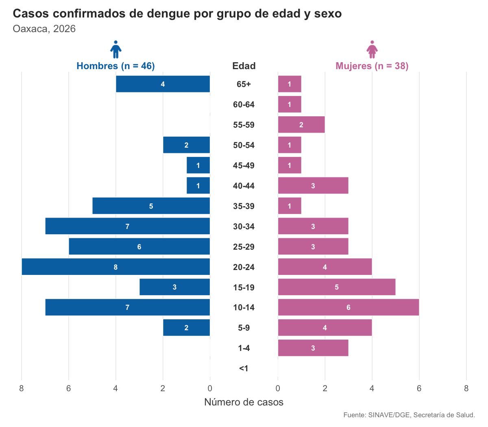
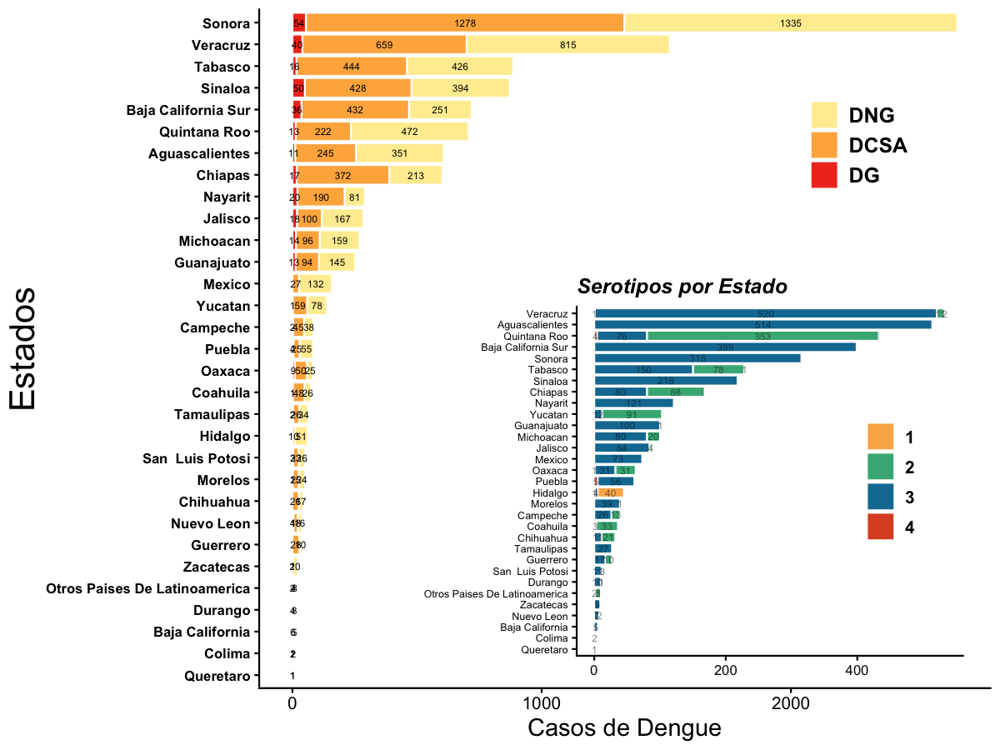
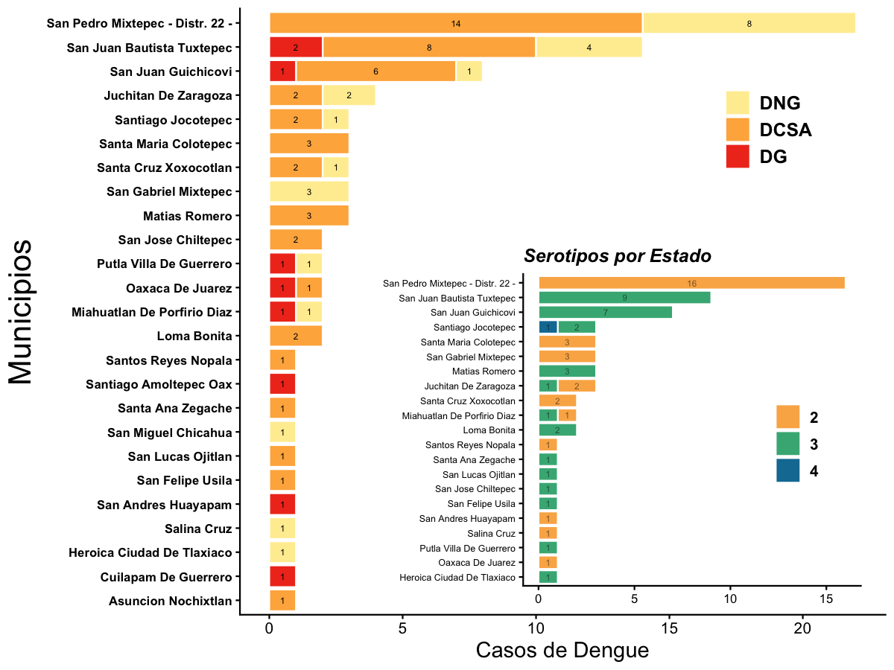
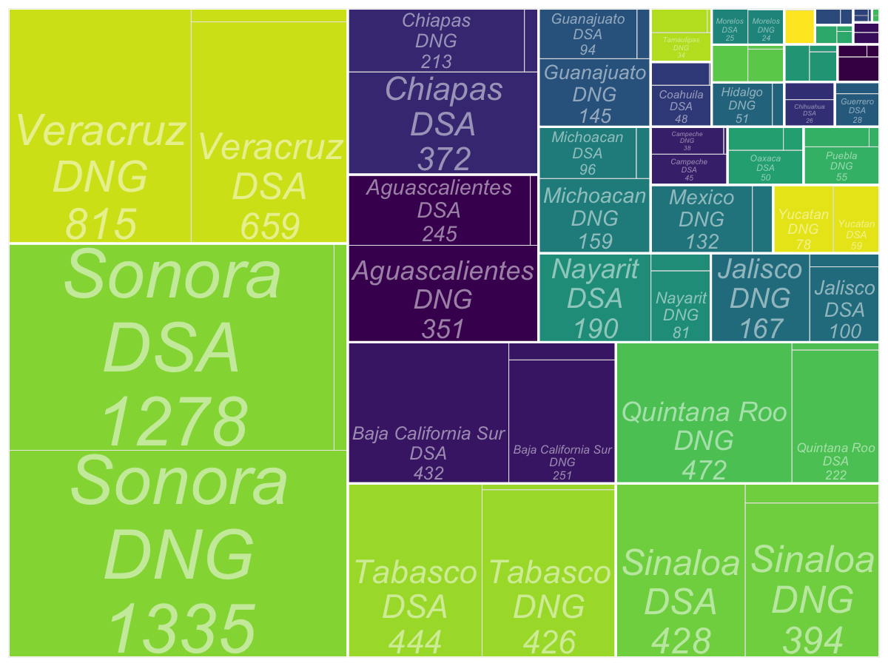
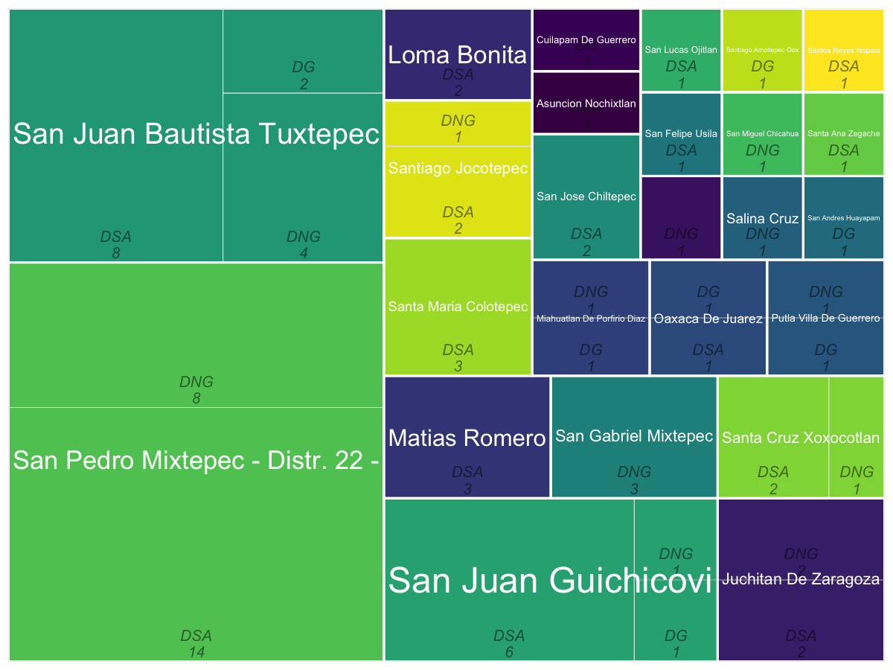
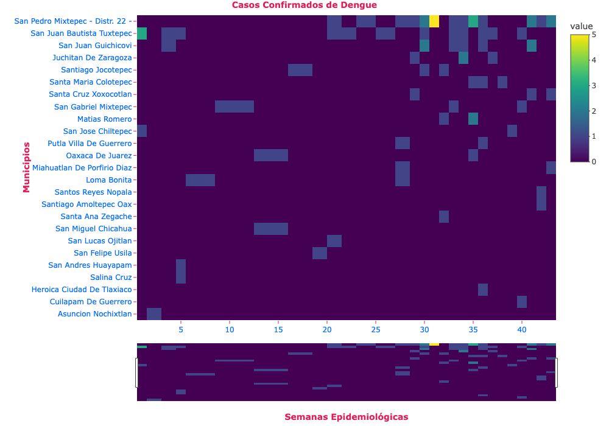

densnv has four functions to plot the dengue cases of the SINAVE dataset:
| function | graph | output |
|---|---|---|
| plt_pyramid() | Pyramid of confirmed cases by age group and sex | ggplot |
| plt_serotype() | Confirmed cases by state or municipality and diagnosis, with the serotypes | ggplot (cowplot) |
| plt_treemap() | Treemap of cases by state or municipality and final diagnosis | ggplot |
| plt_heatmap() | Interactive heatmap (plotly) of cases by municipality and week | plotly |
Titles and labels are in Spanish, the language of the users of the Mexican vector-borne disease program.
x <- data.table::fread("DENGUE2_.txt", quote = "", fill = TRUE)
year <- max(x$ANO, na.rm = TRUE)
year
#> [1] 2026plt_pyramid() uses the confirmed cases
(ESTATUS_CASO == 2) in 15 age groups, with males on the
left and females on the right. Each side is headed by a Font Awesome
icon and the total cases by sex, which act as the legend. For a state or
municipality, filter the dataset first:
oax <- x[x$CVE_EDO_REP == 20 & x$ANO == year, ]
plt_pyramid(data = oax,
col_male = "#0072B2",
col_female = "#CC79A7",
gap = 0.18,
size_age = 3.5,
size_count = 3,
icon_male = "person",
icon_female = "person-dress",
show_zero = FALSE,
title = "Casos confirmados de dengue por grupo de edad y sexo",
subtitle = paste0("Oaxaca, ", year),
caption = "Fuente: SINAVE/DGE, Secretaría de Salud.")
plot of chunk pyramid
To save it in high resolution:
ggplot2::ggsave("pyramid.png", width = 8, height = 7, dpi = 300).
plt_serotype() plots the confirmed cases by state (or by
municipality, with cve_edo) and final diagnosis, and
inserts a plot of the serotypes. scale_serotype,
x_serotype and y_serotype set the size and
position of the inserted plot (see cowplot::draw_plot());
adjust them to the number of bars.
plt_serotype(data = x,
year = year,
scale_serotype = 1.7,
x_serotype = 0.5,
y_serotype = 0.17,
cve_edo = NULL)
plot of chunk serotype_country
One state (Oaxaca), by municipality:
plt_serotype(data = x,
year = year,
scale_serotype = 1.7,
x_serotype = 0.5,
y_serotype = 0.17,
cve_edo = 20)
plot of chunk serotype_oaxaca
plt_treemap() shows the weight of each state (or
municipality) in the total cases, by final diagnosis (non-severe dengue,
with warning signs and severe).
plt_treemap(snv_dataset = x,
country = TRUE,
cve_edo = NULL,
year = year)
plot of chunk treemap_country
plt_treemap(snv_dataset = x,
country = FALSE,
cve_edo = 20,
year = year)
plot of chunk treemap_oaxaca
plt_heatmap() makes an interactive heatmap (plotly):
municipalities in the rows, epidemiological weeks in the columns and the
number of cases in the colour. With hospitalizados = TRUE
only hospitalised cases are counted.
plt_heatmap(dataset = x,
state = "OAXACA",
year = year,
status = 2,
hospitalizados = FALSE)
plot of chunk heatmap_fig
*_REP).plt_pyramid() needs the fontawesome and rsvg packages
for the icons; they are kept when saving with
ggsave().+ ggplot2::theme(...)).